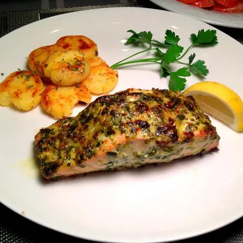

Chef John's Salmon
- Total time25 mins
- Serves2
- Ingredients10
- Steps7

Ingredients
- 2 (8 ounce) center-cut salmon fillets, with skin
- ¼ teaspoon kosher salt
- 1 teaspoon vegetable oil
- 1 clove garlic, sliced
- 1 tablespoon chopped fresh tarragon
- 1 tablespoon chopped fresh flat-leaf parsley
- 3 tablespoons mayonnaise
- 1 teaspoon Dijon mustard
- 1 teaspoon fresh lemon juice
- 1 pinch cayenne pepper
Directions
- Season salmon fillets with kosher salt. Line a baking baking sheet with foil and brush lightly with vegetable oil.
- Preheat oven's broiler on high and set the oven rack about 8 inches from the heat source.
- Process garlic, tarragon, and parsley in a blender or mortar and pestle to form a loose paste.
- Mix mayonnaise, Dijon mustard, lemon juice, and cayenne pepper into garlic paste until combined.
- Place salmon fillets skin side down on the baking sheet. Spoon herb spread over the top and sides of each fillet.
- Cook under the preheated broiler until fillets are well-browned, about 5 minutes. Turn the broiler off and turn the oven to 350 degrees F (175 degrees C).
- Bake until the internal temperature of the salmon is 130 degrees F (55 degrees C) and salmon flakes easily with a fork, about 3 to 4 minutes.
Recipe credit: allrecipes.com